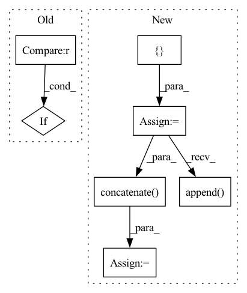

Pattern ID :21765

Before Change
self.transform = transforms.ToTensor()
def __call__(self, ft_root, vname, ft_type):
if ft_type == "visual":
if self.visual_ft is None: return None
ft_path = os.path.join(ft_root, self.visual_ft, vname)
elif ft_type == "audio":
After Change
return torch.sum(seq != 1, dim=2) != 0
def __call__(self, ft_root, vname):
all_ft = []
for ft_name in self.visual_ft:
ft_path = os.path.join(ft_root, ft_name, vname)
all_ft.append(np.load(ft_path + ".npy"))
for ft_name in self.audio_ft:
ft_path = os.path.join(ft_root, ft_name, vname)
all_ft.append(np.load(ft_path + ".npy"))
min_len = min([len(ft) for ft in all_ft])
// TODO: use other sampling method (e.g. uniform sampling)
sampled_ft = [ft[:min_len] for ft in all_ft]
sampled_ft = np.concatenate(sampled_ft, axis=1)
item = torch.Tensor(sampled_ft)
return item
In pattern: SUPERPATTERN
Frequency: 3
Non-data size: 7
Instances
Fragment ID: 69405827
Project Name: salesforce/lavis
Commit Name: e51c64682d9214e3bd806b7cf148d314a98c2ff9
Time: 2022-08-24
Author: hungle@salesforce.com
File Name: lavis/processors/gpt_processors.py
M Class Name: GPTVideoFeatureProcessor
N Class Name: GPTVideoFeatureProcessor
M Method Name: __call__(3)
N Method Name: __call__(4)
M Parent Class: GPTVideoFeatureBaseProcessor
N Parent Class: GPTVideoFeatureBaseProcessor
M File Name: lavis/processors/gpt_processors.py
N File Name: lavis/processors/gpt_processors.py
M Start Line: 61
M End Line: 69
N Start Line: 106
N End Line: 121
'>
Before Change
self.threshold = threshold
self.duration = duration
if overlap is None:
overlap = self.duration / 2
self.json_data = []
After Change
if set(self.sources) == set(__sources__):
mixture = track.audio.transpose(1, 0)
else:
sources = []
for _source in self.sources:
sources.append(track.targets[_source].audio.transpose(1, 0)[np.newaxis])
sources = np.concatenate(sources, axis=0)
mixture = sources.sum(axis=0)
self.std[songID] = np.std(mixture.mean(axis=0))
'>
Fragment ID: 69405800
Project Name: tky823/dnn-based_source_separation
Commit Name: b7a22e8f24f8206fc28ef8b7f01f01fcce0a498c
Time: 2021-08-10
Author: 40362510+tky823@users.noreply.github.com
File Name: egs/musdb18/conv-tasnet/src/adhoc_dataset.py
M Class Name: WaveTrainDataset
N Class Name: WaveTrainDataset
M Method Name: __init__(8)
N Method Name: __init__(8)
M Parent Class: WaveDataset
N Parent Class: WaveDataset
M File Name: egs/musdb18/conv-tasnet/src/adhoc_dataset.py
N File Name: egs/musdb18/conv-tasnet/src/adhoc_dataset.py
M Start Line: 91
M End Line: 117
N Start Line: 83
N End Line: 98
'>
Before Change
cate_i = labels[j].cpu().numpy()
pre_i = predicted[j].cpu().numpy()
conf_mat[cate_i, pre_i] += 1.
if cate_i != pre_i:
path_error.append((cate_i, pre_i, path_imgs[j])) // 记录错误样本的信息
// 统计loss
After Change
loss_list = []
path_error = []
loss_mean = 0
acc_batch_list = []
for i, data in enumerate(data_loader):
inputs, labels = data["image"], data["label"]
inputs, labels = inputs.to(device), labels.to(device)
outputs = model(inputs)
loss = loss_f(outputs.cpu(), labels.cpu())
loss_list.append(loss.item())
loss_mean = np.mean(loss_list)
acc_batch_list.append((1 - np.abs(outputs.cpu().detach().numpy() - labels.cpu().detach().numpy())))
ocean_acc = np.concatenate(acc_batch_list, axis=0).mean(axis=0)
acc_avg = ocean_acc.mean()
return loss_mean, ocean_acc, acc_avg
'>
Fragment ID: 69405821
Project Name: liaorongfan/deeppersonality
Commit Name: 565a883600a2f9be36416c98383ef54294da8ab1
Time: 2021-05-23
Author: 15670381505@163.com
File Name: dpcv/engine/portrait_model_trainer.py
M Class Name: ModelTrainer
N Class Name: ModelTrainer
M Method Name: valid(4)
N Method Name: valid(4)
M Parent Class: object
N Parent Class: object
M File Name: dpcv/engine/portrait_model_trainer.py
N File Name: dpcv/engine/portrait_model_trainer.py
M Start Line: 60
M End Line: 87
N Start Line: 54
N End Line: 71